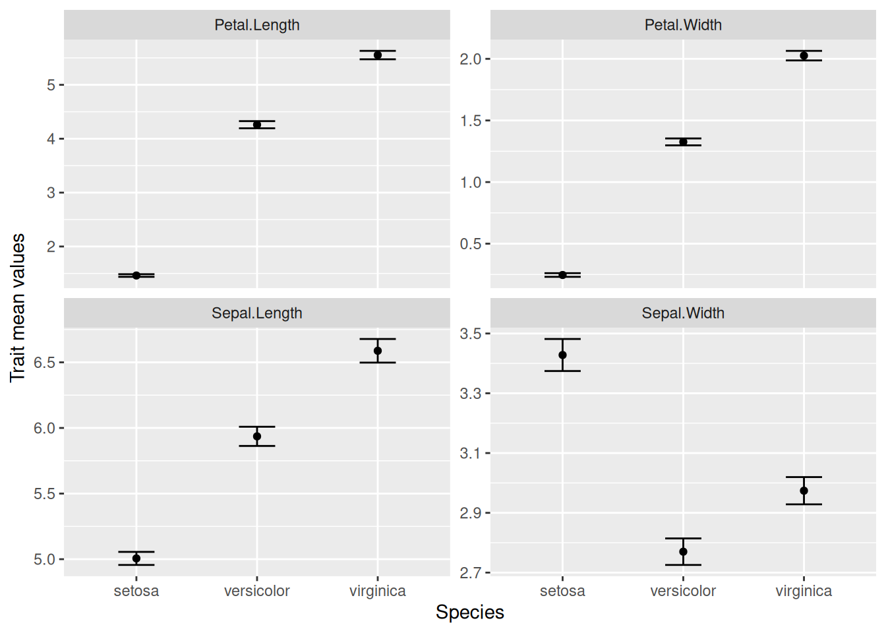
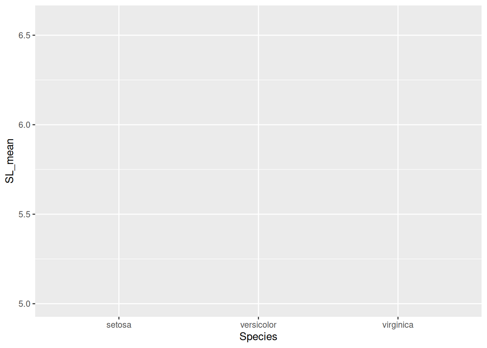
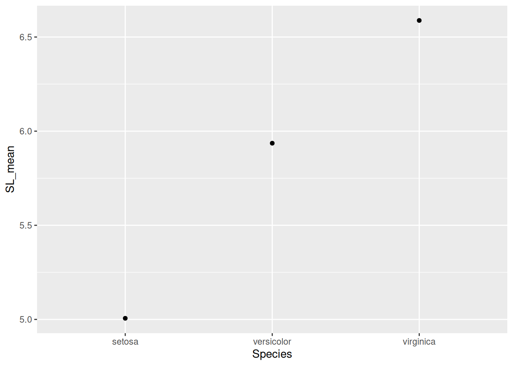
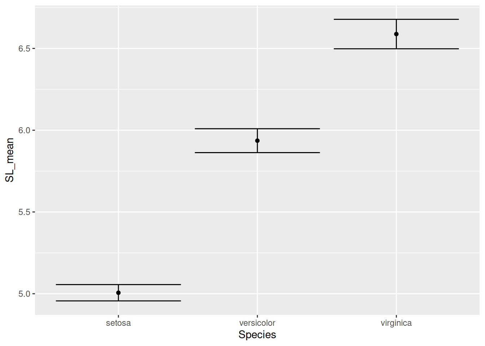
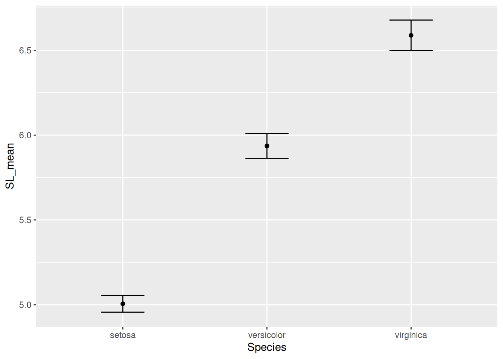
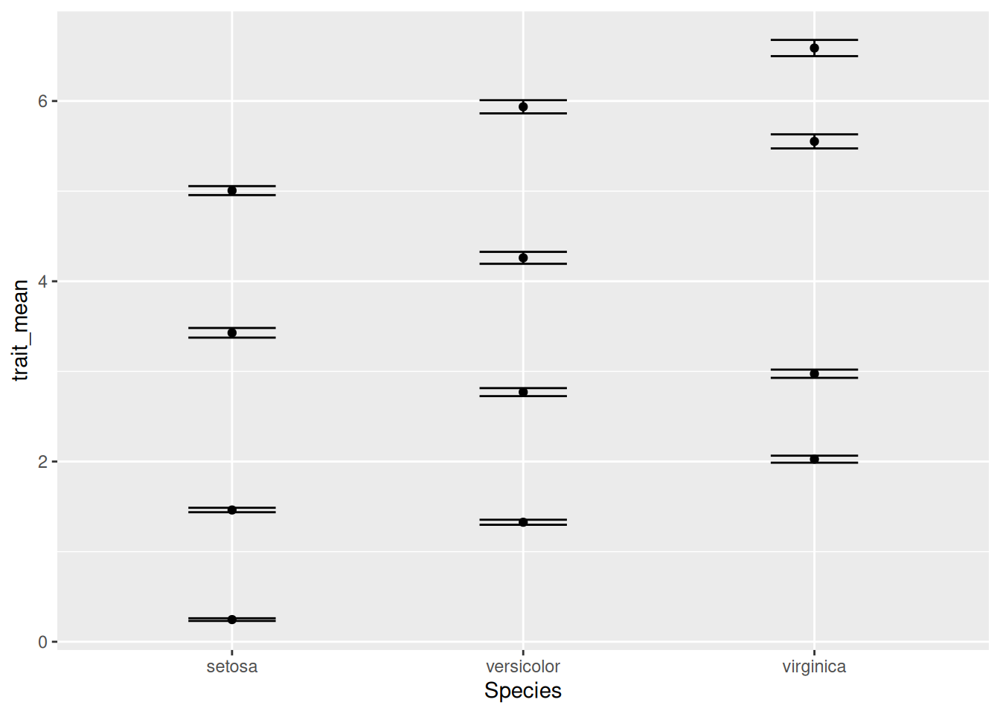
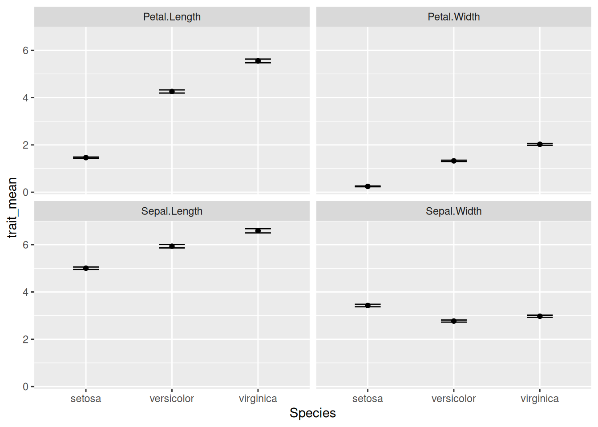
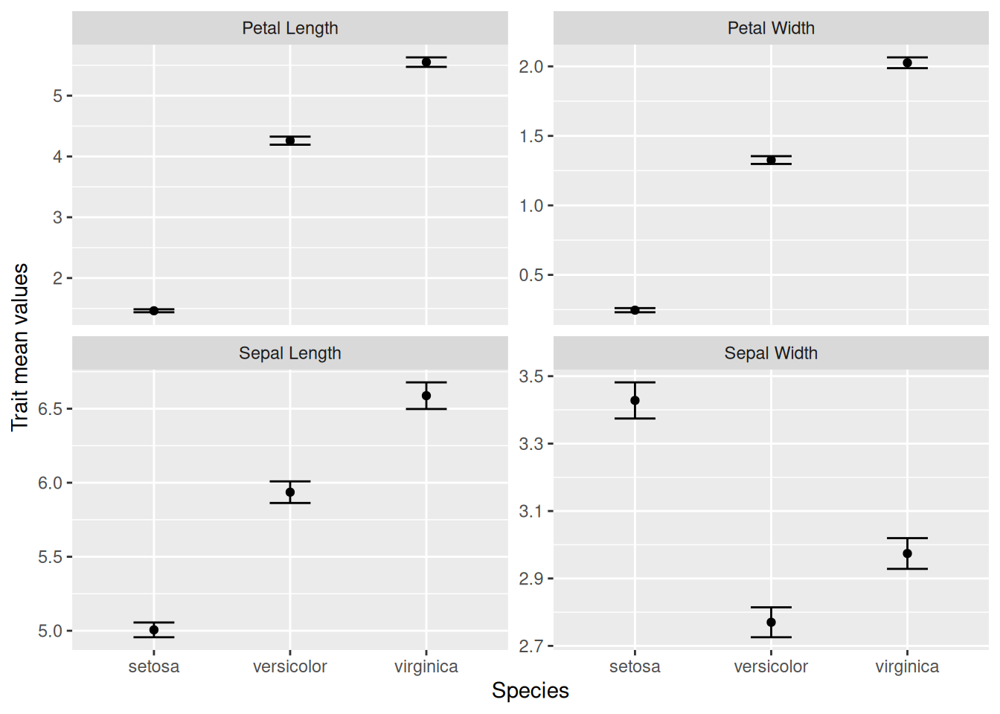

install.packages("tidyverse")Introduction to tidyverse packages
Make your life easier and your code faster with the suite of “tidyverse” packages, including ggplot, tidyr, and dplyr.
Learning objectives
- Manipulate data with
group_byandsummarizeto extract information from datasets - Combine multiple commands with piping functionality
- Create publication-quality data visualizations with
ggplot
Data science: more fun, less pain
R is a powerful language for managing, analyzing, and visualizing complex data. However, some of the commands in R are esoteric or just plain confusing. The tidyverse package for R includes several helpful functions that make it easier to manipulate, summarize, and visualize your data. In this lesson we’ll use these functions to create plots from summary statistics.
Getting started
First we need to setup our development environment. Open RStudio and create a new project via:
- File > New Project…
- Select ‘New Directory’
- For the Project Type select ‘New Project’
- For Directory name, call it something like “r-tidyverse” (without the quotes)
- For the subdirectory, select somewhere you will remember (like “My Documents” or “Desktop”)
We are using the tidyverse package, which itself is really just a collection of six different packages. However, we can install them all with one command:
Our ultimate goal is to use the pre-loaded iris data to create a plot of the data stored in that data frame. The iris data were collected by botanist Edgar Anderson and used in the early statistical work of R.A. Fisher.
We want to make a chart that looks like this:

We want to keep all of our work stored in an R script, so we open a new script and start with an explanation of what we are going to do:
# Plot iris trait measurements
# Jeffrey C. Oliver
# jcoliver@email.arizona.edu
# 2018-05-17Summarizing the data
So what will we need? Break this down into the component parts.
- Means
- Standard errors
- For each species
- For each trait
The hard way
Let’s start with getting the means for a single column, Sepal.Length. If we do this in base R, we need to pull out the values for each species, then calculate the means for each. This looks something like this:
setosa_mean <- mean(iris$Sepal.Length[iris$Species == "setosa"])
versicolor_mean <- mean(iris$Sepal.Length[iris$Species == "versicolor"])
virginica_mean <- mean(iris$Sepal.Length[iris$Species == "virginica"])Which is a little cumbersome, especially if we also need to do the additional step of putting all these means into a single data frame.
# Add these back into a data.frame
iris_means <- data.frame(Species = c("setosa", "versicolor", "virginica"),
SL_mean = c(setosa_mean, versicolor_mean, virginica_mean))There’s a better way
A pair of commands can make this much easier: group_by and summarize. The first, group_by imposes structure on our data; for our immediate purposes, we will use it to group the data by the Species column:
# Load the tidyverse packages
library("tidyverse")
# Group the iris data by values in the Species column
iris_grouped <- group_by(iris, Species)If we look at the first few rows of these data with the head command,
head(iris_grouped)# A tibble: 6 × 5
# Groups: Species [1]
Sepal.Length Sepal.Width Petal.Length Petal.Width Species
<dbl> <dbl> <dbl> <dbl> <fct>
1 5.1 3.5 1.4 0.2 setosa
2 4.9 3 1.4 0.2 setosa
3 4.7 3.2 1.3 0.2 setosa
4 4.6 3.1 1.5 0.2 setosa
5 5 3.6 1.4 0.2 setosa
6 5.4 3.9 1.7 0.4 setosa it looks similar to the iris data we started with, but now, instead of a data.frame, this is actually a tibble. We don’t need to worry much about that now, only to notice that Species is listed as a group and that below the column names is an indication of the data types (there are only numbers <dbl> and factors <fct>).
The second function we want to use is summarize, which does exactly that: it provides some summary of the data we pass to it. Let’s get the mean value of sepal length for each species:
iris_means <- summarise(iris_grouped, SL_mean = mean(Sepal.Length))
iris_means# A tibble: 3 × 2
Species SL_mean
<fct> <dbl>
1 setosa 5.01
2 versicolor 5.94
3 virginica 6.59Note that we did not have to tell summarize to calculate the mean for each species separately. As part of the tidyverse package, summarize knows how to deal with grouped data.
These two functions made it easier, after all we went from this:
# Calcuate the mean for each species
setosa_mean <- mean(iris$Sepal.Length[iris$Species == "setosa"])
versicolor_mean <- mean(iris$Sepal.Length[iris$Species == "versicolor"])
virginica_mean <- mean(iris$Sepal.Length[iris$Species == "virginica"])
# Add these back into a data.frame
iris_means <- data.frame(Species = c("setosa", "versicolor", "virginica"),
SL_mean = c(setosa_mean, versicolor_mean, virginica_mean))To this:
iris_grouped <- group_by(iris, Species)
iris_means <- summarise(iris_grouped, SL_mean = mean(Sepal.Length))But there is another operator that can make our life even easier. If you are familiar with the bash shell, you might be familiar with the pipe character, |, which is used to re-direct output. A similar operator in R is %>% and is used to send whatever is on the left-side of the operator to the first argument of the function on the right-side of the operator. So, these two statements are effectively the same:
# This:
iris %>% group_by(Species)
# is the same as:
group_by(iris, Species)But here comes the really cool part! We can chain these pipes together in a string of commands, sending the output of one command directly to the next. So instead of the two-step process we used to first group the data by species, then calculate the means, we can do it all at once with pipes:
iris_means <- iris %>%
group_by(Species) %>%
summarize(SL_mean = mean(Sepal.Length))Let’s break apart what we just did, line by line:
iris_means <- iris %>%We did two things here. First, we instructed R to assign the final output to the variableiris_meansand we sent theirisdata to whatever command is coming on the next line.group_by(Species)This line is effectively the same asgroup_by(.data = iris, Species), because we sentirisdata togroup_bythrough the pipe,%>%. We then sent this grouped data to the next line.summarize(SL_mean = mean(Sepal.Length))This used the grouped data from the precedinggroup_bycommand to calculate the mean values of sepal length for each species.- The final output of
summarizewas then assigned to the variableiris_means.
Remember our plot:

Where are we with our necessary components?
- Means
- Standard errors
- For each species
- For each trait
Well, we have the means for each species, but we don’t have the standard errors and we only have data for one trait (sepal length). Let’s start by calculating the standard error. Remember the formula for the standard error is the standard deviation divided by the square root of the sample size:
\[
SE = \frac{\sigma}{\sqrt{n}}
\] Base R has the function sd which calculates the standard deviation, but we need another function from tidyverse, n, which counts the number of observations in the current group. So to caluclate the standard error, we can use sd(Sepal.Length)/sqrt(n()). But where? It turns out that summarize is not restricted to a single calculation. That is, we can summarize data in multiple ways with a single call to summarize. We can update our previous code to include a column for standard errors in our output:
iris_means <- iris %>%
group_by(Species) %>%
summarize(SL_mean = mean(Sepal.Length),
SL_se = sd(Sepal.Length)/sqrt(n()))
iris_means# A tibble: 3 × 3
Species SL_mean SL_se
<fct> <dbl> <dbl>
1 setosa 5.01 0.0498
2 versicolor 5.94 0.0730
3 virginica 6.59 0.0899Visualize!
At this point, we should go ahead and start trying to plot our data. Another part of the tidyverse package is ggplot2, a great package for making high-quality visualizations. ggplot2 uses special syntax for making graphs. We start by telling R what we want to plot in the graph:
ggplot(data = iris_means, mapping = aes(x = Species, y = SL_mean))
But our graph is empty! This is because we did not tell R how to plot the data. That is, do we want a bar chart? A scatterplot? Maybe a heatmap? We are going to plot the means as points, so we use geom_point(). Note also the specialized syntax where we add components to our plot with the plus sign, “+”:
ggplot(data = iris_means, mapping = aes(x = Species, y = SL_mean)) +
geom_point()
Great! So now we also need to add those error bars. We’ll use another component, geom_errorbar to do this.
ggplot(data = iris_means, mapping = aes(x = Species, y = SL_mean)) +
geom_point() +
geom_errorbar(mapping = aes(ymin = SL_mean - SL_se,
ymax = SL_mean + SL_se))
Note that for the error bars, the calculations for the positions of the bars (1 standard error above and below the mean) are actually performed inside the ggplot command.
Those error bars are a little outrageous, so let’s make them narrower by setting the width inside the call to geom_errorbar():
ggplot(data = iris_means, mapping = aes(x = Species, y = SL_mean)) +
geom_point() +
geom_errorbar(mapping = aes(ymin = SL_mean - SL_se,
ymax = SL_mean + SL_se),
width = 0.3)
Our plot looks good for now. Let’s move on to getting all our traits in a single graph.
An aside: narratives in data
All the data we deal with are, in some way, collected by humans. Even if data are collected with data loggers or automated systems, humans were still involved in deciding how, where, and when to collect those data. When we use data, we should consider rationale behind the people who created the dataset. What was their motivation? What was the story they intended to tell? We can ask this about the Iris flower data we are working on; use the resources you have (in this case, a search engine in a web browser), to answer the following questions:
- Who generated these data?
- What were the data originally used for?
- Have the data been used for other purposes?
You can read more about narratives in data science from the ADSA Data Science Ethos page at https://ethos.academicdatascience.org/lenses/narratives/.
The long way
The iris data are organized like this:
Sepal.Length Sepal.Width Petal.Length Petal.Width Species
1 5.1 3.5 1.4 0.2 setosa
2 4.9 3.0 1.4 0.2 setosa
3 4.7 3.2 1.3 0.2 setosa
4 4.6 3.1 1.5 0.2 setosa
5 5.0 3.6 1.4 0.2 setosa
6 5.4 3.9 1.7 0.4 setosaBut in order to capitalize on ggplot functionality, we need to reorganize the data so each row only has data for a single trait, like this:
# A tibble: 6 × 3
Species trait measurement
<fct> <chr> <dbl>
1 setosa Sepal.Length 5.1
2 setosa Sepal.Width 3.5
3 setosa Petal.Length 1.4
4 setosa Petal.Width 0.2
5 setosa Sepal.Length 4.9
6 setosa Sepal.Width 3 This is known as “long” format, where each row only has a single trait observation. To make this data conversion, we use the the pivot_longer function:
iris_long <- pivot_longer(data = iris,
cols = -Species,
names_to = "trait",
values_to = "measurement")The arguments we pass to pivot_longer are:
data = iristhis indicatesirisis the data frame we want to transformcols = -Speciestellspivot_longernot to treat the value in theSpeciescolumn as a separate variablenames_to = "trait"traitis the column name for the variable names (e.g. “Sepal.Length”, “Sepal.Width”, etc.)values_to = "measurement"measurementis the column name for the actual values
Let’s take this pivot_longer functionality and combine it with the group_by and summarize commands we used previously. Recall our earlier code to generate species’ means and standard errors:
iris_means <- iris %>%
group_by(Species) %>%
summarize(SL_mean = mean(Sepal.Length),
SL_se = sd(Sepal.Length)/sqrt(n()))We’ll want to update this, inserting the pivot_longer function and updating the values used for calculating the mean and standard deviation:
iris_means <- iris %>%
pivot_longer(cols = -Species,
names_to = "trait",
values_to = "measurement") %>%
group_by(Species, trait) %>%
summarize(trait_mean = mean(measurement),
trait_se = sd(measurement)/sqrt(n()))Note the insertion of pivot_longer and the changes to group_by and summarize:
group_by: We add an additional term,trait, to indicate to create another grouping, based on each traitsummarize: We replaceSL_meanwithtrait_meanandSL_sewithtrait_se
Aside: You might see a warning that looks like
`summarise()` has grouped output by ‘Species’. You can override using the `.groups` argument.
This is just telling us that the data are still considered to be grouped. For our purposes, this will not affect anything downstream, so we won’t worry about it.
Our data frame now has a row for each species and each trait:
iris_means# A tibble: 12 × 4
# Groups: Species, trait [12]
Species trait trait_mean trait_se
<fct> <chr> <dbl> <dbl>
1 setosa Petal.Length 1.46 0.0246
2 setosa Petal.Width 0.246 0.0149
3 setosa Sepal.Length 5.01 0.0498
4 setosa Sepal.Width 3.43 0.0536
5 versicolor Petal.Length 4.26 0.0665
6 versicolor Petal.Width 1.33 0.0280
7 versicolor Sepal.Length 5.94 0.0730
8 versicolor Sepal.Width 2.77 0.0444
9 virginica Petal.Length 5.55 0.0780
10 virginica Petal.Width 2.03 0.0388
11 virginica Sepal.Length 6.59 0.0899
12 virginica Sepal.Width 2.97 0.0456Great! So now we need to use these summary statistics to create our plot. Recall the code we used to plot the sepal lengths:
ggplot(data = iris_means, mapping = aes(x = Species, y = SL_mean)) +
geom_point() +
geom_errorbar(mapping = aes(ymin = SL_mean - SL_se,
ymax = SL_mean + SL_se),
width = 0.3)We need to update:
- The specification of what to plot on the y-axis in the
ggplotfunction- In
ggplotcommand: changeSL_meantotrait_mean
- In
- The values for error bar boundaries
- In
geom_errorbarcommand: replaceSL_meanwithtrait_meanandSL_sewithtrait_se
- In
ggplot(data = iris_means, mapping = aes(x = Species, y = trait_mean)) +
geom_point() +
geom_errorbar(mapping = aes(ymin = trait_mean - trait_se,
ymax = trait_mean + trait_se),
width = 0.3)
Something isn’t quite right. We actually want four separate charts, one for each of the traits. To do so, we need to tell R how to break apart the data into separate charts. We do this with the facet_wrap component of ggplot:
ggplot(data = iris_means, mapping = aes(x = Species, y = trait_mean)) +
geom_point() +
geom_errorbar(mapping = aes(ymin = trait_mean - trait_se,
ymax = trait_mean + trait_se),
width = 0.3) +
facet_wrap(~ trait)
OK, there are a few more things we want to change:
- The names of each subplot reflect the trait names, which were column names in the original data. Let’s update the values so the two words for each trait are separated by a period, not a space (e.g. “Petal.Width” becomes “Petal Width”).
- We should make that Y-axis title a little nicer. We’ll use
ylabfor that. - All four charts are using the same y-axis scale; note all the petal width values are below 3, but the maximum value of the y-axis is 6. Since we won’t be doing comparisons on actual values between the charts, we can give each chart its own, independent y-axis scale. We’ll add this information to the
facet_wrapcommand.
# Update trait names, replacing period with space
iris_means$trait <- gsub(pattern = ".",
replacement = " ",
x = iris_means$trait,
fixed = TRUE) # if fixed = FALSE, evaluates as regex
ggplot(data = iris_means, mapping = aes(x = Species, y = trait_mean)) +
geom_point() +
geom_errorbar(mapping = aes(ymin = trait_mean - trait_se,
ymax = trait_mean + trait_se),
width = 0.3) +
ylab(label = "Trait mean values") + # update the y-axis title
facet_wrap(~ trait, scales = "free_y") # allow y-axis scale to vary
With the use of tidyverse functions, we created a publication-quality graphic with just a few lines of code.
Our final script looks like:
# Plot iris trait measurements
# Jeffrey C. Oliver
# jcoliver@email.arizona.edu
# 2018-05-17
rm(list = ls())
# Load the tidyverse packages
library("tidyverse")
# Create data of summary statistics
iris_means <- iris %>%
pivot_longer(cols = -Species,
names_to = "trait",
values_to = "measurement") %>%
group_by(Species, trait) %>%
summarize(trait_mean = mean(measurement),
trait_se = sd(measurement)/sqrt(n()))
# Update trait names, replacing period with space
iris_means$trait <- gsub(pattern = ".",
replacement = " ",
x = iris_means$trait,
fixed = TRUE)
# Plot each trait separately
ggplot(data = iris_means, mapping = aes(x = Species, y = trait_mean)) +
geom_point() +
geom_errorbar(mapping = aes(ymin = trait_mean - trait_se,
ymax = trait_mean + trait_se),
width = 0.3) +
ylab(label = "Trait mean values") +
facet_wrap(~ trait, scales = "free_y")Additional resources
- Official page for the tidyverse package
- Cheatsheet for data wrangling with the dpylr package
- An opinionated discussion about “tidy” data
- A PDF version of this lesson
- Software Carpentry lessons on dplyr, tidyr, and ggplot2 packages